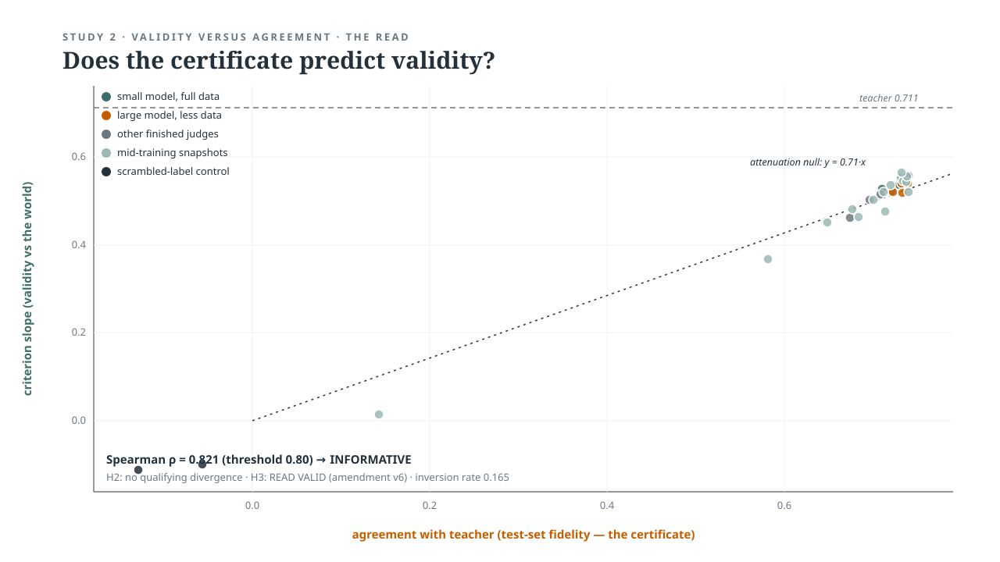

Research Agenda
I rate the rater. Closed or open, an evaluator is an instrument: its validity has to be established before any score it produces can be attributed to anything. I define the measurement standard, determine what evidence is sufficient to trust the result, and direct the engineering required to make that evidence observable.
The result is Measurement Science for AI Evaluation: evaluation infrastructure that can separate model behaviour from evaluator and stack effects, establish reliability floors, and turn reported deltas into defensible measurements.
Dissertation
Measuring Political Concepts Over Time with Constrained Large Language Models
Ph.D., Political Science (Political Methodology), Rutgers University — conferred May 17, 2026
Committee: Beth Leech (chair) · Junyi Jessy Li (Linguistics, UT Austin) · Richard Lau (political psychology) · Jan Kubik (interpretive methods)
Designed the Measurement, Evaluation & Validation (MEV) framework — each of the three established separately — for measuring affect and economic ideology across 36 years of text, where drift in language and meaning is a background condition rather than an anomaly to detect.
Qualified a closed API model as a measuring instrument with no weights and no logits. Control was exercised entirely at the interface — fixed output space, temperature 0, era-grounded exemplars, ICL/CoT scaffolding restricting admissible outputs — and everything else assessed a posteriori, from outputs alone. Contested concepts became scorable measures by building drift into the construct instead of correcting for it downstream: 24 topic frame labels, ordered inference logic, and calibration rules precise enough that an independent annotator working from the written guidelines alone reproduces the assignments.
Two validated time-series datasets came out of it — 10,759 scored respondent-party observations from 6,336 respondents for partisan affect, and a frame-grounded economic ideology series — each checked against its own exogenous ANES benchmark, 1984–2020. Rater agreement was established before aggregation (Cohen's κ 0.64–0.81 across annotator and model pairings; Fleiss' κ 0.71–0.78 across three raters, with GPT-4 executing the same constrained procedure as the human annotators), and the constrained procedure beat a zero-shot baseline in every survey year and for both annotators — the measurable return on constraining the method. Code, released measures, and codebook →
Extending the dissertation — black box: is the number real?
The dissertation qualified one instrument from outside it. The programme runs on two fronts: carrying that instrument into new questions where only outputs are visible, and opening the stack underneath to ask whether a reported number is the model at all.
This is the first front. No weights, no logits, no access to the computation — the evidence has to come from a criterion the model never saw. The dissertation validated the instrument against ANES feeling thermometers; these carry the same instrument into new questions.
Can qualification be reproduced for each new construct, rather than rebuilt by hand?
Automating the dissertation's measure–evaluate–validate protocol into a general instrument, so that the work of qualifying a measure is performed by the instrument itself each time it is pointed at something new.
What can be measured in the decades before the criterion existed?
The feeling thermometer — the criterion the dissertation validated against — begins in 1978; the ANES open-ended like/dislike questions run back to 1952. This project extends the affect measure toward 1952, where the evidentiary situation changes as it goes back: verbatim response text is published from 1984 onward, while 1952–1980 survives as coded mentions rather than the words themselves. What an instrument qualified on verbatim text can legitimately claim over coded mentions is the methodological question the project turns on. The source archive is secured and the pipeline re-established.
- DataANES open-ended like/dislike responses, 1952 onward — permanently private archive; contains ANES respondent data
Do the cheap judge copies used in production retain the validity of the judge they copy?
The first preregistered test of the question. The human-validated GPT-4 instrument — 9,857 scored responses — was extended into two open-weight replicas, and the dissertation's validation replicated out-of-sample at 0.71 against a published 0.75.
The sweep. Twelve runs — two models × three LoRA ranks × two learning rates, all on the full training set (7,914 units, bf16). Selection was sealed before the read, made on validation fidelity alone with the criterion untouched.
| Model · learning rate | rank 8 | rank 16 | rank 32 |
|---|---|---|---|
| Qwen2.5-7B · 1e-4 | ran | ran | ran |
| Qwen2.5-7B · 2e-4 | ran | ran | selected — val r 0.7685 |
| Mistral-7B · 1e-4 | ran | ran | ran |
| Mistral-7B · 2e-4 | selected — val r 0.7692 | ran | ran |
Every cell in the sweep landed within nine thousandths of every other — validation band r = 0.760–0.769 across all twelve, zero parse failures over roughly 22,000 generations. That forecloses the obvious objection: the copies were as good as this recipe gets, and still lost the criterion. Against the teacher's slope of 0.711 (r 0.696), the two selected finals read 0.557 (r 0.540) and 0.560 (r 0.546) — while their test fidelity, 0.741 and 0.742, flagged nothing.
- DesignHash-chained preregistration; held-out feeling-thermometer criterion; two open-weight replicas of a human-validated teacher
- CodePreregistration chain, decision logs, and results share one repository with Validity versus Agreement. Public companion in preparation — code, registrations, and charts, without respondent data.
Does certification predict validity at all?
A thirteen-model ladder — 0.5B to 7B, ten varied data conditions — of judge copies fine-tuned run-by-run under experimenter control, with every training decision logged append-only, unlike the automated grid of the prior study. Validity is sealed behind an air gap until one blind read of the human criterion.

- ExtendsDistilled-Judge Validity Transfer, under the same preregistration lineage
- ApparatusRun-by-run experimenter control; append-only training log; air-gapped criterion; a single blind read
Open-Weight Evaluation Reliability Harness — validated from inside: model, or stack?
A running prototype that pins every condition of a computation, turns exactly one, and reads the condition vector back from live machine state — scalable, reusable infrastructure for separating a model delta from a stack effect.
Does the result hold still?
This answers the question every eval team asks under time pressure: is it the model or the infrastructure? Across a swept grid — precision, batch size and composition, attention kernel, threading, 1–4-GPU tensor parallelism — precision dominates every infrastructure variable by 103–104. That yields a regression threshold: a delta below it is the serving stack, not the model, and no further investigation is warranted.
The precision knob is priced in the unit that actually gets reported — the declared score. Across a bf16/fp16 MMLU/LAMBADA grid every cell repeats exactly (spread 0.0 over five cold starts), while dtype alone moves declared MMLU accuracy by up to four points in either direction (0.230→0.270; 0.595→0.560): a delta the size of an advertised model upgrade, produced by numeric format, and invisible to any QA built on repetition.
Two further results. fp16 silently destroyed 99.5% of Qwen-7B's token probabilities — exponent-range overflow, diagnosed from per-token evidence — while sparing equal-sized Mistral-7B, perfectly reproducibly and therefore undetectable by rerun. And the aggregate is not hiding the items: decision-margin structure quantified beneath each declared score (50k generation steps, median top-2 margin 1.4, none within 10-4 of flipping), which also bounds how much evaluation is needed to separate models.
What can an outsider check?
Every hypothesis is sealed under a named falsification condition before its runs, SHA-256 hash-chained across eight successive preregistrations. Six predictions fell, and the falsifications are published as the findings — nothing reinterpreted after data.
Provenance is read from the machine, not from documentation. Every run emits a self-hashing manifest whose condition vector — dtype, kernels, TF32, determinism flags, silicon — is read back from live system state, with per-token evidence in verifiable sidecars (108/108 verify); alongside an append-only log of PI rulings D1–D20 and a full table of reported figures with their conditions. Open source (MIT), CI-verified, pytest, golden datasets under CI regression — another researcher can rerun the comparison and get the same numbers.
- EvidenceSeals, receipts, and decision logs — private during IP review; request access